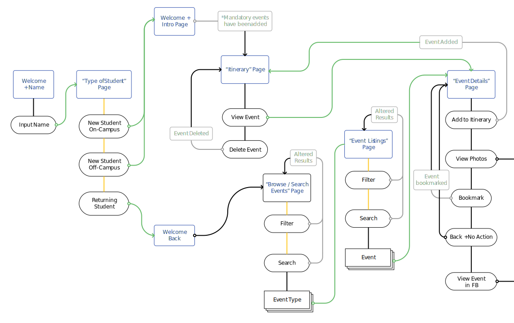

Mid-Fi Mock-Ups
User Flow
[Fill Text]
Browse and Search Screen
When browsing events, users typically do not have a specific event in mind; thus I created a more exploratory approach to finding events. They will have access to a large list of events within an “event type”. From there, they first filter by date, and if needed, apply a search criteria. I want to purposefully make search feel like a secondary function to allow users to explore.

Itinerary Screens
[Fill Text]
Detail Screens
[Fill Text]